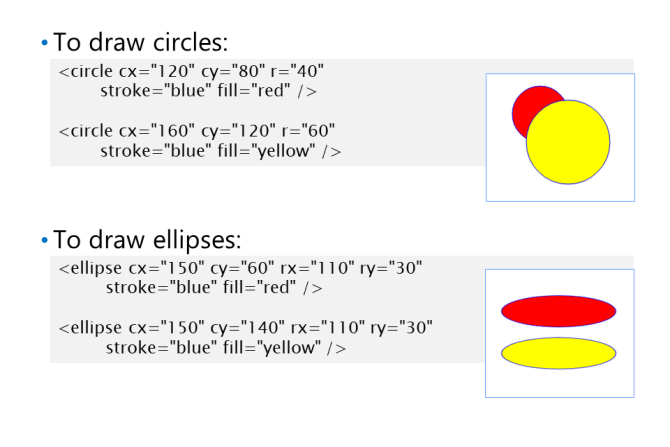
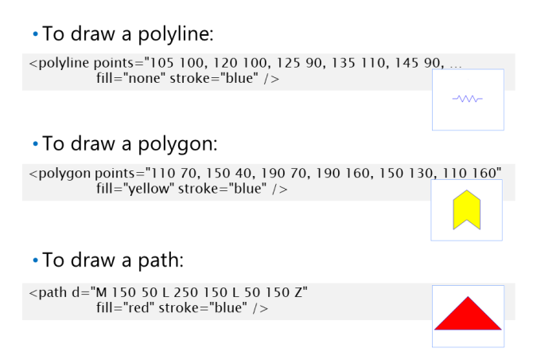
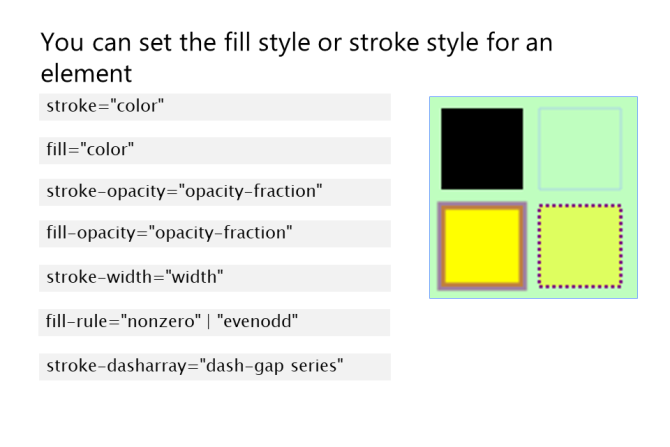
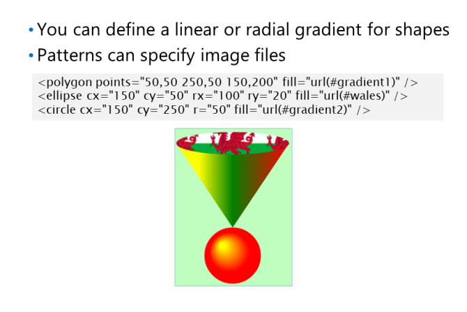

Aby użyć SVG na stronie internetowej, dodaj element svg
i określ przestrzeń nazw XML w następujący sposób:
<svg xmlns="http://www.w3.org/2000/svg">
...
</svg>
Element svg może zawierać dowolną liczbę
Elementy związane z SVG, takie jak rec or
ellipse . Każdy z tych elementów ma zestaw
właściwości, które umożliwiają skonfigurowanie jego
wygląd.
Poniższa lista opisuje niektóre z typowych
właściwości, które można ustawić dla elementów związanych z SVG:
• x i y: Pozycja kształtu w elemencie svg
względem lewej strony i
odpowiednio na górze elementu
svg.
• width and height: szerokość i wysokość kształtu.
• fill and stroke: kolor wypełnienia i kolor obrysu kształtu.
Poniższy przykład tworzy element svg
, który zawiera dwa prostokąty. Pierwszy prostokąt jest czerwony
i ma zaokrąglone rogi, zgodnie z atrybutami rx i ry. Drugi prostokąt jest żółty i
częściowo zasłania pierwszy prostokąt, ponieważ jest on zdefiniowany po nim w elemencie
svg:
Poniższy przykład definiuje regułę arkusza stylów dla wszystkich elementów
Drawing Circles and Ellipses

SVG definiuje elementy circle
i ellipse
które pozwalają rysować koła i elipsy w
element svg
Element circle
ma właściwości cx i cy
które określają położenie punktu środkowego
okrąg wewnątrz elementu svg.
circle
również
ma atrybut r, który określa promień
okrąg.
pierwsze koło jest czerwone, a drugie koło jest żółte.
Drugi krąg częściowo zasłania pierwszy krąg, ponieważ jest zdefiniowany po nim w elemencie svg:
Element ellipse
ma właściwości cx i cy, które określają położenie punktu środkowego. ellipse
ma również atrybuty rx i ry, które określają promień elipsy w kierunkach X i Y. Jeśli rx i ry są
tak samo, elipsa pojawi się jako koło.
Pierwsza elipsa jest czerwona, a druga elipsa jest żółta. The
elipsy mają ten sam kształt, ponieważ mają te same właściwości rx i ry. Jednak elipsy mają
różne właściwości cy, więc pojawiają się przy różnych przesunięciach pionowych w elemencie svg:
Rysowanie złożonych kształtów

SVG definiuje polyline, polygon, and
path
, które umożliwiają rysowanie
złożone kształty w elemencie svg.
Polyline
Element polyline
tworzy rysunek linii
składający się z szeregu połączonych punktów. The
punkty są określone przez atrybut points, który
definiuje rozdzieloną przecinkami serię X i Y
współrzędne Polilinia nie łączy ostatniego
wskaż z powrotem do pierwszego punktu.
Poniższy przykład tworzy polilinię, która rysuje poszarpaną niebieską linię:
Polygon
Element polygon
jest podobny do elementu polyline
, tyle że wielokąt łączy ostatni
skieruj z powrotem do pierwszego punktu, aby utworzyć zamknięty kształt.
Path
Element path
umożliwia narysowanie złożonego kształtu jako serii segmentów ścieżki. path
element ma atrybut d, który definiuje kontur kształtu. Atrybut d składa się z szeregu
rysowanie poleceń w następujący sposób:
• M: przejście do nowej lokalizacji bez rysowania linii.
• L: Narysuj linię z bieżącej lokalizacji do nowej lokalizacji.
• O: Narysuj łuk eliptyczny.
• P: Narysuj kwadratową krzywą Beziera. Kwadratowa krzywa Beziera to krzywa, która łączy dwa punkty i ma
jeden punkt zwrotny na swojej drodze.
• C: Narysuj sześcienną krzywą Beziera. Sześcienna krzywa Beziera to krzywa, która łączy dwa punkty i ma dwa zakręty
wskazuje na swojej drodze.
• Z: Zamknij bieżącą ścieżkę, łącząc ostatni punkt z powrotem z pierwszym punktem.
Poniższy przykład tworzy prostą ścieżkę, która rysuje jednolity czerwony trójkąt z niebieskim konturem. M
przesuwa bieżącą lokalizację do (150, 50). polecenie L rysuje linię od bieżącego
lokalizacja do (250, 150). Następne polecenie L rysuje linię z bieżącej lokalizacji do (50, 150). Z
zamyka ścieżkę, rysując linię z powrotem do punktu początkowego (150, 50):
Określanie stylów wypełnienia i stylów obrysu

Elementy związane z SVG mają szereg atrybutów
które umożliwiają określenie sposobu wypełnienia elementu
i jak narysować jego zarys. Te atrybuty
zawierają:
• stroke and fill: określ kolor konturu i
odpowiednio kolor wypełnienia kształtu.
• stroke-opacity and fill-opacity: Określ
nieprzezroczystość konturu i wypełnienie
odpowiednio kształt. opacity jest ułamkowe
wartość między 0,0 a 1,0. Wartość 0,0
oznacza całkowicie przezroczysty i wartość
1.0 oznacza całkowicie nieprzezroczyste. Domyślny
opacity wynosi 1,0.
• stroke-width: Określa szerokość stroke, jako rozmiar bezwzględny lub procent
rozmiar kształtu.
• fill-rule: określa, jak ustalić, która strona ścieżki znajduje się wewnątrz kształtu. fill-rule wypełnienia to
co ważniejsze w złożonych nakładających się kształtach, ponieważ SVG umożliwia określenie, które części
kształtu, aby wypełnić kolorem wypełnienia. Istnieją dwie możliwe wartości reguły wypełniania: nonzero and evenodd.
• stroke-dasharray: Określa wzór patternów, które będą używane podczas rysowania konturu.
Atrybut dasharray to ciąg liczb określony spacjami lub przecinkami. Pierwszy numer określa
długość kreski; druga liczba określa długość przerwy; trzecia liczba określa
długość następnego patternu; czwarta liczba określa długość następnej przerwy; i tak dalej. Liczby
można wyrazić jako wartości bezwzględne lub jako wartości procentowe.
Poniższy przykład tworzy prostokąt z czarnym wnętrzem i bez konturu:
Następny przykład tworzy prostokąt bez wnętrza i jasnoniebieskiego konturu:
Następny przykład tworzy prostokąt z żółtym wnętrzem i grubym, półprzezroczystym fioletowym konturem
Ostatni przykład tworzy prostokąt z półprzezroczystym żółtym wnętrzem i przerywanym fioletowym konturem
Using Gradients and Patterns

SVG zapewnia trzy elementy, które ci to umożliwiają
określ gradienty i wzory, których możesz użyć
wypełnij kształt lub narysuj kontur:
• linearGradient
• radialGradient
• pattern
linearGradient
Element linearGradient
tworzy liniowy
gradient kolorów, które można zastosować do kształtu.
ma cztery atrybuty
zdefiniuj początkową i końcową lokalizację gradientu liniowego na docelowym kształcie:
• x1 i y1: Określa punkt początkowy gradientu liniowego na kształcie docelowym.
• x2 i y2: Określa punkt końcowy gradientu liniowego na kształcie docelowym.
Możesz określić dowolną liczbę punktów przejścia koloru w gradiencie liniowym. Każdy punkt zatrzymania koloru jest określony jako stop
element potomny i ma dwa atrybuty:
• offset: Określa położenie punktu zatrzymania koloru wzdłuż gradientu liniowego.
• stop-color: Określa kolor do zastosowania w tym miejscu wzdłuż gradientu liniowego.
Poniższy przykład pokazuje, jak zdefiniować gradient liniowy. Gradient liniowy zaczyna się w lewym górnym rogu
róg kształtu, do którego jest stosowany, ponieważ wartości x1 i y1 wynoszą 0%. Gradient liniowy kończy się
w prawym górnym rogu docelowego kształtu, ponieważ wartość x2 wynosi 100%, a wartość y2 wynosi 0%. The
gradient liniowy określa zatem poziomą linię w poprzek górnej części docelowego kształtu. Istnieją trzy kolory
przystanki, które są stosowane wzdłuż tej linii, tworząc gradient liniowy w zakresie od żółtego do zielonego, oraz
następnie z zielonego na czerwony:
radialGradient
tworzy promieniowy gradient kolorów, który można zastosować do kształtu. The
Element radialGradient
ma dwa atrybuty o nazwach fx i fy, które definiują punkt centralny radialu
gradient na docelowym kształcie.
Możesz określić dowolną liczbę punktów przejścia koloru w gradiencie promieniowym. Każdy kolor stopu ma przesunięcie i kolor stopu
atrybuty; atrybut offset reprezentuje procentową odległość od (fx, fy) do krawędzi najbardziej zewnętrznego
okrąg.
Poniższy przykład pokazuje, jak zdefiniować gradient promieniowy. Gradient promieniowy jest skupiony na punkcie
30% od lewego górnego rogu docelowego kształtu, ponieważ wartości fx i fy wynoszą 0,3. Istnieją dwa kolory
przystanki, które są stosowane jako koncentryczne okręgi wyśrodkowane na (fx, fy), tworząc gradient promieniowy w zakresie
żółty do czerwonego:
pattern
Element pattern
tworzy wzór, który można zastosować do kształtu. pattern
ma
atrybuty określające width and height wzoru. Zawartość do wyświetlenia we wzorcu to
określony jako element potomny elementu pattern
.
Poniższy przykład pokazuje, jak zdefiniować wzór na podstawie pliku obrazu o nazwie „wales.png”, który
zawiera obraz flagi walijskiej.
Tworzenie gradientów i wzorów wielokrotnego użytku
Strona internetowa może używać określonego gradientu lub wzoru w kilku różnych miejscach. Zamiast definiować
każdy gradient lub wzór osobno, możesz zdefiniować je raz w elemencie defs
, a następnie odwołać się
do nich według ich identyfikatora, gdy chcesz zastosować je do elementów na swojej stronie.
Poniższy przykład definiuje trzy gradienty i wzory wielokrotnego użytku i nadaje każdemu z nich unikalny identyfikator. The
przykład tworzy następnie kilka kształtów. Kształty odwołują się do gradientów i wzorów
ich wartości id: